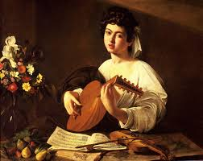

Lugares em que a musica fez historia
- Egito
- Mesopotamia
- Grecia em roma
- Idade Média
- Renascimento
- Barroco
Egito
Fragmento das pinturas da tumba de Nebamum, em Tebas
A música no Egito era uma grande parte religiosa os egípcios acreditavam que us dos seus muitos deuses era responsável por sua criação e que seu deus osíris fez uso dela para civilizar o mundo os instrumentos mais usados eram flautas,clarinetes e harpas
Mesopotamia
Nas mesopotâmia foram encontradas harpas de 3 a 20 cordas 2 com mais de 5 mil anos que pertenciam aos povos summer.
Standard of Ur – 2600 a.C. – The British Museum
Ásia
A Lady Playing the Tanpura
3.000 a.C. - A música apareceu na Índia e na China também com forte envolvimento espiritual e religioso, o instrumento mais usado entre os chineses era a cítara .Já na Índia, em 800 a.C., o método era ragas (é como eram chamados os modos clássicos indianos).
Música na Grécia e em Roma
Dioscorides of Samos
A cultura musical na Grécia Antiga era uma força entre os seres humanos e os deuses, tanto que a palavra música significa “a artes das musas” (musas eram seres que tinham a capacidade de inspirar conhecimento artístico e científico).
Música na Idade Média
guido D,arezzo
Na idade média na Europa a religião católica ditada a conduta de todos tanto politicamente como socialmente então a música esteve muito presente nos cultos católicos.
Música no Renascimento
Saint Cecilia
Mas enquanto a cultura da idade média era o que a igreja católica dizia na época do renascentismo a cultura teve transformações porque os interesses estavam voltados para a razão a ciência e o ser humano estas transformações também estavam presentes na música. que buscava se distanciar dos costumes da igreja, uma descoberta na música nesse tempo foi a polo. Uma característica significativa da música nesse período foi a polifonia, que compreende a combinação simultânea de quatro ou mais sons. Podemos citar como um grande compositor da Renascença Thomas Walker.
Música no Barroco
Deutsche Barock Kantate
Foi uma época muito fertil para a música ocidental com o surgimento das óperas e orquestras de câmaras assim como o virtuosismo dos músicos a tocar instrumentos.
Como surgiu a musica
A música foi um importante passo do homem na cultura da humanidade descoberta lá no começo da civilização desde quando o homem das cavernas descobriu as melodias que podiam ser ouvidas esfregando um objeto no outro